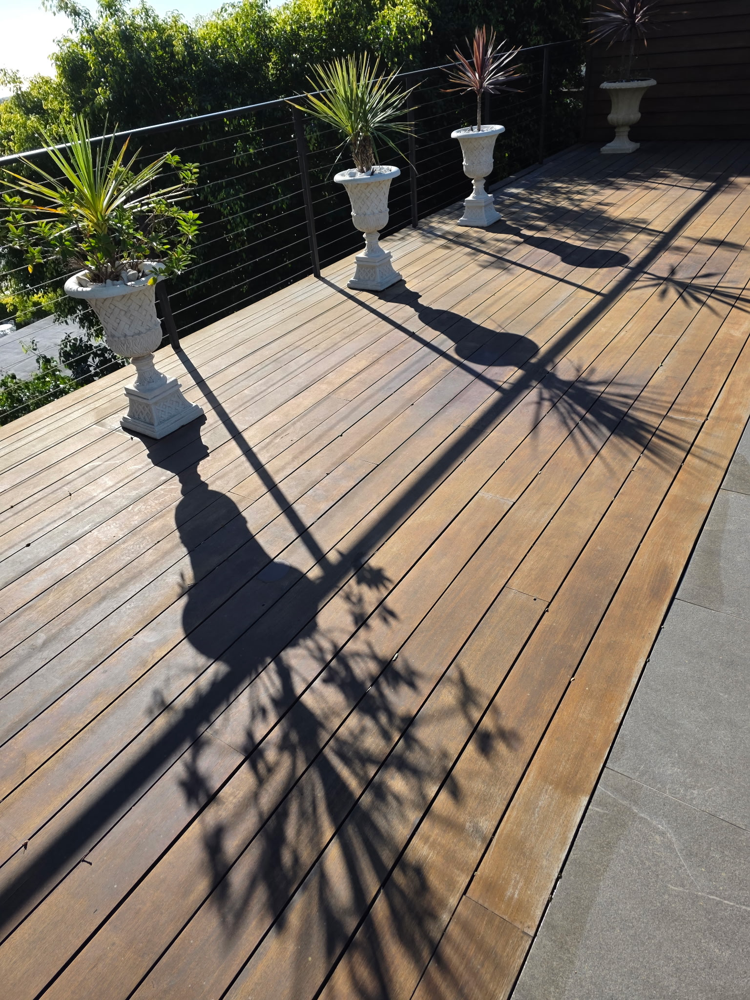
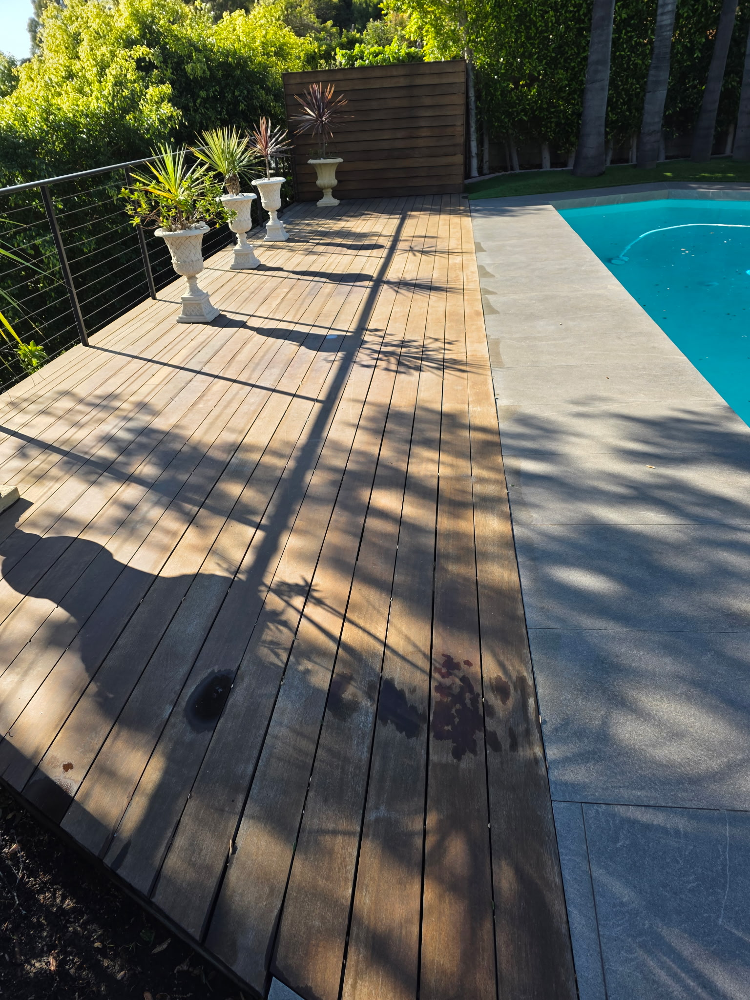

Recent Projects
Premium Deck Restoration
See the pristine finish of our premium exterior wood cleaning and restoration process across the Valley.





Professional exterior cleaning for homes, driveways, patios, walkways, and small commercial properties. Reliable local service with polished results.
We safely and effectively remove dirt, mold, and grime across residential and light commercial properties in the San Fernando Valley.
We respect your time. Our streamlined process makes transforming your property effortless from start to finish.
Fill out our fast quote form and we'll reply promptly.
Pick a time that works best for you. Dependable scheduling guaranteed.
Our technicians arrive and execute professional-grade exterior cleaning.
Experience a safer, cleaner surface and massively boosted curb appeal.
We treat every residential and commercial property as if it were our own, ensuring meticulous detailing and professional communication.
See the pristine finish of our premium exterior wood cleaning and restoration process across the Valley.

Don't just take our word for it. Look at what our local clients are saying about our responsive communication and quality work.
We provide comprehensive pressure washing services across the entire San Fernando Valley region, including [EXACT_NEIGHBORHOOD_PLACEHOLDERS: e.g. Encino, Sherman Oaks, Studio City, Burbank, and Northridge]. Please contact us if you are unsure if you fall within our exact boundaries.
We clean almost all exterior surfaces. This includes concrete driveways, stone patios, wood decks, vinyl fencing, brick walkways, and delicate house siding (using low-pressure soft washing techniques).
Yes, we specialize in both. Whether you are a homeowner needing a full exterior cleaning or a property manager looking to spruce up a small commercial storefront, our equipment is fully capable.
You can request a quote extremely quickly by filling out the form at the top or bottom of this page. We prioritize a fast quote process and will generally follow up within a business day.
The duration depends heavily on the square footage and specific services requested. For example, a standard driveway typically takes 1-2 hours, while a full property exterior detailing may take half a day. We will provide an exact time estimate with your quote.
No, you do not need to be home as long as we have full access to the exterior surfaces being cleaned and a functional exterior water hookup. We handle everything else professionally while you are away.